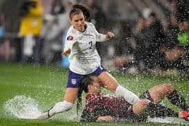

Hands down, my absoulute favorite thing about Spring is the rain. I enjoy the spring rain for a couple of different reasons. One, it means that the snow is finally going away and I appreciate the change in percipitation. Two, rain makes soccer so much more enjoyable, and after spending all winter in a stuffy gym, there is nothing better than having a down pour during one of those first outdoor practices, no matter the temperature.